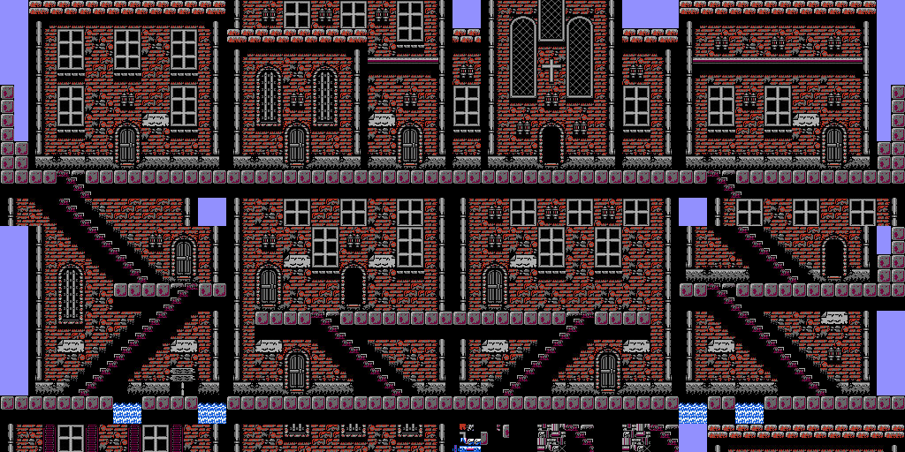
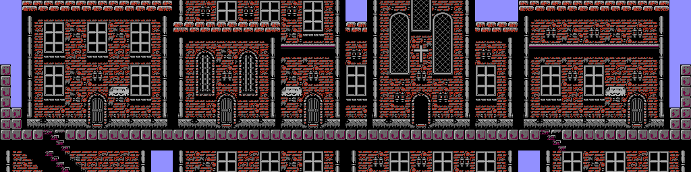
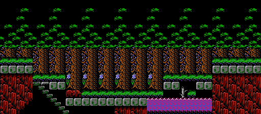
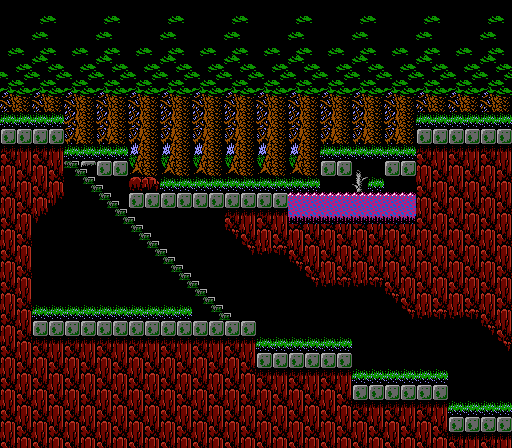
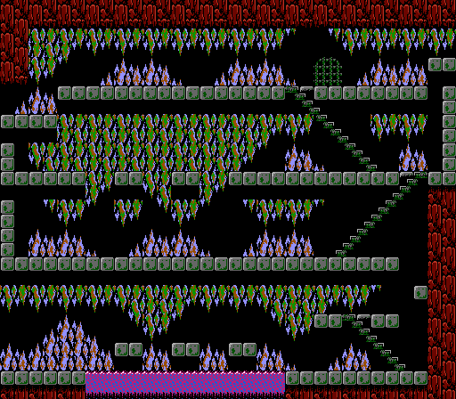

Milestone
Vertical map sections are now decoded
The renderer now treats each layout header as a grid: horizontal column groups by vertical sections. Atlas entries can render the whole layout space instead of only the first row.

Before and after
Jova exposes the missing second row
The old atlas path drew section 0 only. The new renderer reads the header as 4x2 and stacks both rows into one layout-space image.

Outdoor verticality
Dora Woods Part 2 now includes the lower section
This is the kind of screen that made the atlas gap visible: a staircase continues down into a second layout row. The full-grid render captures that lower walkable space.


Atlas impact
Thirteen entries are larger than one viewport row
The atlas manifest now records the grid dimensions, rendered sections, pointer cells, and per-cell layout addresses. That metadata is useful for PNG output today and for a future canvas renderer later.

Next work